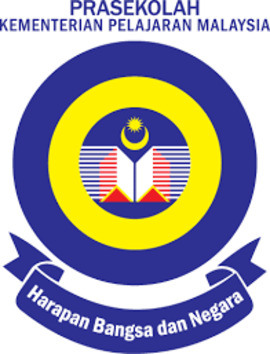

Universiti Teknologi MARA, Cawangan Negeri Sembilan
1. Pra Sekolah

This journey begin when I was 6 years old, my journey in pra sekolah was filled with excitement and wonder.
Every morning, I eagerly walked into the cheerful classroom, greeted by the warm smiles of my teachers and
classmates. It was a time of discovery, where I learned to read, write, and count through fun activities and
colorful lessons. I loved the arts and crafts sessions, where my imagination came alive as I painted and
created little masterpieces to proudly show my parents. Playing with friends during recess was the highlight
of my day, whether it was running around the playground or sharing snacks under the shady trees.
Those early years were not just about learning; they were about building friendships, gaining confidence,
and laying the foundation for my educational journey. Looking back, pra sekolah was a special chapter that
shaped my love for learning and adventure.
2. Sekolah Rendah Kebangsaan Meru
Entering primary school at SK Meru 2 was an exciting new chapter in my life. As a Year 1 student,
I was a little nervous but eager to explore the bigger classrooms and meet new friends. I quickly
adjusted to the routine, with my days filled with learning, assembly, and recess. Each year brought
new challenges and experiences, from mastering Bahasa Melayu and English to tackling mathematics and
science. I remember my teachers being patient and encouraging, always ready to guide us through both
academics and values.
By the time I reached the upper primary years, I was more confident and actively participated in school
activities like sports, cultural performances, and classroom projects. My favorite moments were the school
competitions, where I pushed myself to excel and make my parents proud. Darjah 6 was particularly
significant as I prepared for the UPSR exams, a milestone that taught me the value of discipline and
perseverance. SK Meru 2 was not just a school; it was a place where I grew, learned life lessons, and
built friendships that I cherish to this day. Those six years shaped my character and prepared me for
the next steps in my educational journey.
3. Sekolah Menengah Kebangsaan Meru
My journey in high school at SMK Meru was a time of growth, discovery, and challenges.
Starting as a Form 1 student, I was excited but slightly nervous about entering a new environment.
The transition from primary to secondary school meant adjusting to a larger campus, new subjects, and
making new friends. Slowly, I found my footing, and the years flew by as I balanced academics with
extracurricular activities. From joining school clubs and participating in sports to spending time with
friends during recess, high school became a place where I built memories that I still cherish.
Form 4 and Form 5 brought a more focused and intense phase as I prepared for the Sijil Pelajaran Malaysia
(SPM), the most important exam in high school. However, the COVID-19 pandemic made these years unlike
anything I had experienced before. The sudden shift to online learning was challenging—I had to adapt to
virtual classes, manage my own time, and stay motivated despite the uncertainties. It was a strange and
isolating period, but it taught me resilience and discipline.
Finally sitting for the SPM in the midst of the pandemic was surreal. Masked faces, social distancing,
and strict SOPs defined the exam experience, but it also made me more determined to do my best. Completing
high school during such a turbulent time was an achievement I will always be proud of, and those years at
SMK Meru shaped me into the person I am today—stronger, more adaptable, and ready to face new challenges.
4. Universiti Teknologi Mara, Cawangan Negeri Sembilan
Currently, I am in the final stretch of my journey as a diploma student in Information Management.
Reflecting on the past semesters, this experience has been both rewarding and challenging, shaping
me academically and personally. From the very first class, I was introduced to the fascinating world
of information systems, records management, and data organization. Each subject deepened my
understanding and passion for this field, making me appreciate how information drives decision-making
in today’s digital age.
The journey wasn’t always smooth—I faced tight deadlines, complex assignments, and demanding projects.
Yet, these challenges pushed me to step out of my comfort zone and develop skills like time
management, teamwork, and critical thinking. My internship experience, particularly working in a
medical records office, allowed me to apply what I had learned in real-world settings and see the
importance of efficiency and accuracy in managing information.
Now, as a last-semester student, I am filled with mixed emotions. There’s a sense of pride in how
far I’ve come, excitement for the opportunities that lie ahead, and a touch of nervousness as I
prepare for the transition into the professional world. This diploma has not only equipped me with
valuable knowledge but has also given me the confidence to pursue my dreams and carve my own path in
the field of information management.
.jpg) Entering primary school at SK Meru 2 was an exciting new chapter in my life. As a Year 1 student,
I was a little nervous but eager to explore the bigger classrooms and meet new friends. I quickly
adjusted to the routine, with my days filled with learning, assembly, and recess. Each year brought
new challenges and experiences, from mastering Bahasa Melayu and English to tackling mathematics and
science. I remember my teachers being patient and encouraging, always ready to guide us through both
academics and values.
Entering primary school at SK Meru 2 was an exciting new chapter in my life. As a Year 1 student,
I was a little nervous but eager to explore the bigger classrooms and meet new friends. I quickly
adjusted to the routine, with my days filled with learning, assembly, and recess. Each year brought
new challenges and experiences, from mastering Bahasa Melayu and English to tackling mathematics and
science. I remember my teachers being patient and encouraging, always ready to guide us through both
academics and values.
.png)